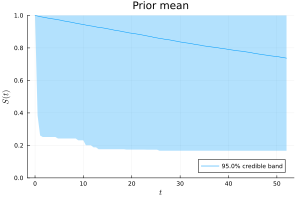
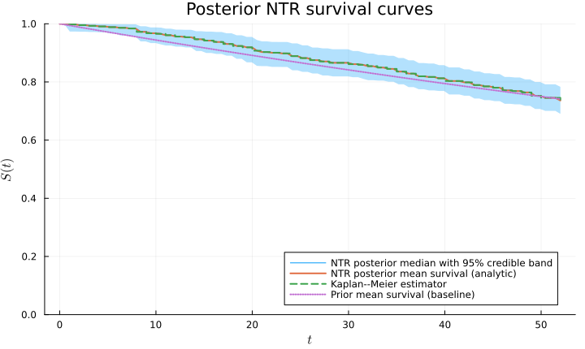
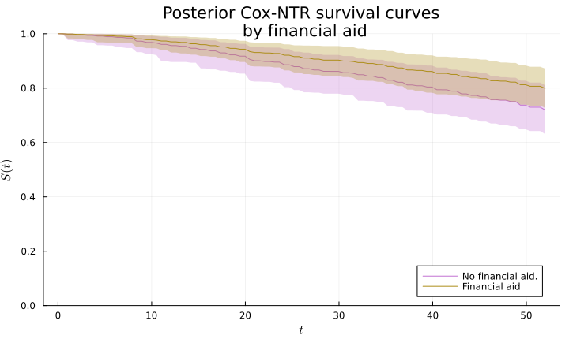
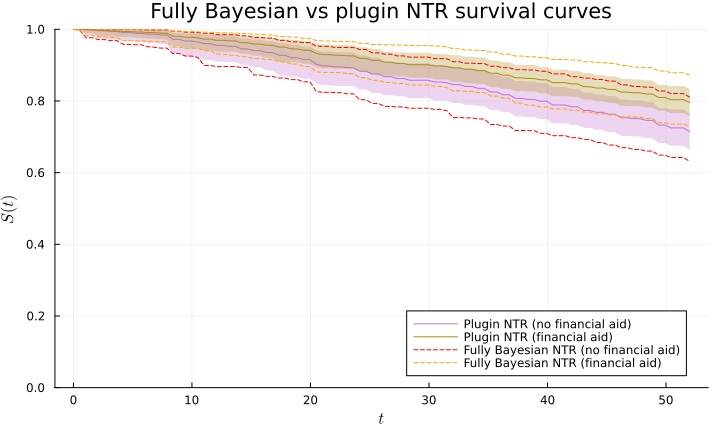

Quick start: the Rossi recidivism data
We illustrate the workflow with the Rossi recidivism data. The event-time data contain observed follow-up times in weeks and indicators of whether a rearrest occurred during the follow-up period.
julia> using Random, CSV, DataFrames, NTRsurv, Survival, Statistics, StatsModels, StatsAPI, Plotsjulia> Random.seed!(1234);julia> Rossi = CSV.read( joinpath(pkgdir(NTRsurv), "examples", "data", "rossi.csv"), DataFrame)432×9 DataFrame Row │ arrest week fin age race wexp mar paro prio │ Int64 Int64 Int64 Int64 Int64 Int64 Int64 Int64 Int64 ─────┼──────────────────────────────────────────────────────────────── 1 │ 1 20 0 27 1 0 0 1 3 2 │ 1 17 0 18 1 0 0 1 8 3 │ 1 25 0 19 0 1 0 1 13 4 │ 0 52 1 23 1 1 1 1 1 5 │ 0 52 0 19 0 1 0 1 3 6 │ 0 52 0 24 1 1 0 0 2 7 │ 1 23 0 25 1 1 1 1 0 8 │ 0 52 1 21 1 1 0 1 4 ⋮ │ ⋮ ⋮ ⋮ ⋮ ⋮ ⋮ ⋮ ⋮ ⋮ 426 │ 0 52 0 24 1 1 0 1 2 427 │ 1 12 1 22 1 1 1 1 2 428 │ 0 52 1 31 0 1 0 1 3 429 │ 0 52 0 20 1 0 0 1 1 430 │ 0 52 1 20 1 1 1 1 1 431 │ 0 52 0 29 1 1 0 1 3 432 │ 0 52 1 24 1 1 0 1 1 417 rows omitted
Constructing the NTR model
A SurvivalData object stores the observed times, censoring indicators, and the sufficient statistics required by the NTR posterior computations. The baseline determines the prior mean survival curve, while α modulates the prior dispersion. Here we use an empirical Bayes baseline constructed from the data.
julia> T = Float64.(Rossi.week);julia> δ = Int64.(Rossi.arrest);julia> data = SurvivalData(T, δ)Right-censored survival data Observations: 432 Exact events: 114 (26.4%) Right-censored: 318 (73.6%) Distinct times: 49 (11.3%)
The sample size, number of observed events, and number of right-censored observations are:
julia> (nrow(Rossi), sum(δ), length(δ) - sum(δ))(432, 114, 318)
julia> α = 1.0;julia> baseline = EmpiricalBayesBaseline(data)Neutral-to-the-right baseline Specification: Empirical ExponentialBaseline(rate=0.005755)
Assessment of the prior specification can be done by plotting a prior credibility band
julia> t = collect(range(0.0, maximum(T), length = 100));julia> prior_band = prior_credible_band(t,α,baseline; level=0.95, ndraws=3000)Credible band Credible level: 95.0% Estimate: Prior mean Time grid: 0.0 to 52.0 (100 points) Monte-Carlo paths: 3000 Median band width: 0.8328 Maximum band width: 0.83299
The argument level = 0.95 for the credible band discards five percent of the ndraws = 3000 sampled paths in the Monte-Carlo band computation, yielding an approximate 95% credible band. The default values for the keyword arguments are respectively $0.95$ and $3000$, with similar functionality for posterior credible bands as illustrated below.
A method for plotting credible bands has been implemented in Plots.jl
julia> prior_plot = plot(prior_band);
The neutral to the right model with such baseline prior is constructed with
julia> NTR_model = NeutralToTheRightModel(α, baseline, data)Neutral-to-the-right model Gamma process α: 1.0 Center: Empirical ExponentialBaseline(rate=0.005755) Data: SurvivalData(obs.=432, exact=114, censored=318, distinct=49)
Posterior mean, median and credible band
The posterior mean is available analytically, while credible bands are computed from posterior survival draws; both are evaluated on a time mesh t.
julia> posterior_mean = mean_posterior_survival(t, NTR_model);julia> posterior_band = posterior_credible_band(t, NTR_model; level=0.95, ndraws=3000)Credible band Credible level: 95.0% Estimate: Posterior median Time grid: 0.0 to 52.0 (100 points) Monte-Carlo paths: 3000 Median band width: 0.089016 Maximum band width: 0.093266
The returned CredibleBand struct has fields d for the downward envelope, u for the upward envelope and m for a middle curve which is the Monte Carlo posterior median by default, with argument mean_center=false omitted, or the Monte Carlo posterior mean when mean_center = true.
For comparison, we also compute the Kaplan–Meier estimator using Survival.jl.
julia> km = fit(Survival.KaplanMeier, T, δ);Show plotting code
julia> NTR_baseline = exp.(-baseline.κ.(t));julia> NTR_plot = plot( posterior_band, label = "NTR posterior median with 95% credible band", title = "Posterior NTR survival curves", size = (720, 430));julia> plot!( NTR_plot, t, posterior_mean, linewidth = 2, label = "NTR posterior mean survival (analytic)");julia> plot!( NTR_plot, km.events.time, km.survival, seriestype = :steppost, linewidth = 2, linestyle = :dash, label = "Kaplan--Meier estimator");julia> plot!( NTR_plot, t, NTR_baseline, linewidth = 2, linestyle = :dot, label = "Prior mean survival (baseline)");

Posterior restricted mean survival times,
\[\Delta_\tau = \int_0^\tau S(t\mid \pmb{\mathcal{D}} ) \,\mathrm{d}t,\]
are computed with
julia> rmst = RestrictedMeanSurvivalTime( t, NTR_model)Restricted mean survival time Restriction time: 52.0 Grid length: 100.0 Covariate: Float64[] Model: Neutral-to-the-right-model Posterior draws: 3000 Posterior mean: 45.847 Credible interval: [44.595, 46.937] Credible level: 95.0%
Cox-NTR regression
We set a RegressionSurvivalData object which stores the observed times, censoring indicators, covariates and required sufficient statistics for the Cox-NTR posterior computations.
julia> z_keys = [:fin, :age, :race, :wexp, :mar, :paro, :prio];julia> Z = [ [Float64(Rossi[j, key]) for key in z_keys] for j in 1:nrow(Rossi) ];julia> dataregre = RegressionSurvivalData(T, δ, Z)Right-censored survival data with covariates Observations: 432 Exact events: 114 (26.4%) Right-censored: 318 (73.6%) Covariates: 7 Distinct times: 49 (11.3%) Distinct covariates: 354 (81.9%)
A practical Cox-NTR workflow first obtains a point estimate of the regression coefficients and then conditions the Cox-NTR posterior computations on that estimate. For example, either estimates from an MCMC sampler of the posterior distribution or using the frequentist estimator are good alternatives.
julia> # Robbins-Monro algorithm for variance of proposal distribution tuning sd_prop_tuned, c₀_tune, llikc₀_tune = robbins_monro_mh_within_gibbs_tune(150,100,x->NTRsurv.loglikelihood(x,α,baseline,dataregre),zeros(7),0.1.*ones(7),0.4.*ones(7),0.7;show_progress=false);julia> # Metropolis-Hastings within Gibbs chain run chain_c, _ = random_walk_mh_within_gibbs( 3000, x-> NTRsurv.loglikelihood(x,α,baseline,dataregre), c₀_tune, llikc₀_tune, sd_prop_tuned[end]);julia> # Posterior mean estimate of regression coefficients for plugin NTR-Cox model c_post = mean(chain_c)7-element Vector{Float64}: -0.38669785739989776 -0.055049423088755975 0.3964021146231859 -0.15294558773095304 -0.4920447395535642 -0.06972913884843615 0.09125271197248243
We set the plugin NTR model using the posterior mean c_post computed above.
julia> plugin_NTR_Cox_model = PluginCoxNeutralToTheRightModel( c_post, α, baseline, dataregre)Plugin Cox Neutral-to-the-right model Coefficients: ["-0.3867", "-0.055049", "0.3964", "-0.15295", "-0.49204", "-0.069729", "0.091253"] Risk score: Cox α: 1.0 Center at Z=zeros: Empirical ExponentialBaseline(rate=0.005755) Data: SurvivalData(obs.=432, exact=114, censored=318, distinct T = 49, distinct Z = 354)
We can see that the posterior mean estimator of the Bayesian NTR workflow for the regression coefficients c_post is quite similar to the frequentist Cox partial likelihood estimator obtained with the Survival.jl package.
julia> Rossi.event = Survival.EventTime.(Rossi.week, Rossi.arrest .== 1);julia> freq_Cox_model = Survival.coxph( @formula(event ~ fin + age + race + wexp + mar + paro + prio), Rossi);julia> c_freq = coef(freq_Cox_model)7-element Vector{Float64}: -0.37942216648588595 -0.057437742684061606 0.31389978784250694 -0.14979569766653542 -0.4337038779373095 -0.08487108250039298 0.09149708098529642
We can also fit a fully Bayesian model where posterior uncertainty on the regression coefficients is accounted for.
julia> NTR_Cox_model = CoxNeutralToTheRightModel( chain_c, α, baseline, dataregre)Cox Neutral-to-the-right model Coefficient draws: 3000 Risk score: Cox Gamma process α: 1.0 Center at Z=zeros: Empirical ExponentialBaseline(rate=0.005755) Data: SurvivalData(obs.=432, exact=114, censored=318, distinct T = 49, distinct Z = 354)
Furthermore we can use the coeftable function from the StatsAPI.jl package to compare the standard deviation estimates for regression coefficients between the frequentist and Bayesian nonparametric approaches. The frequentist table reports estimated sampling standard errors, whereas the Bayesian table reports marginal posterior standard deviations and central equal-tailed 95% credible interval intervals.
julia> StatsAPI.coeftable(freq_Cox_model)──────────────────────────────────────────────── Estimate Std.Error z value Pr(>|z|) ──────────────────────────────────────────────── fin -0.379422 0.191379 -1.98256 0.0474 age -0.0574377 0.0219995 -2.61087 0.0090 race 0.3139 0.307993 1.01918 0.3081 wexp -0.149796 0.212224 -0.705837 0.4803 mar -0.433704 0.381868 -1.13574 0.2561 paro -0.0848711 0.195757 -0.433554 0.6646 prio 0.0914971 0.0286485 3.19378 0.0014 ────────────────────────────────────────────────
and
julia> StatsAPI.coeftable( NTR_Cox_model;names=StatsAPI.coefnames(freq_Cox_model))──────────────────────────────────────────────────────────────────────────── Posterior mean Posterior standard deviation Credible interval 95.0% ──────────────────────────────────────────────────────────────────────────── fin -0.386698 0.190304 [-0.76181, -0.0240615] age -0.0550494 0.0204267 [-0.0965476, -0.0166345] race 0.396402 0.321846 [-0.20181, 1.06396] wexp -0.152946 0.219125 [-0.58871, 0.265815] mar -0.492045 0.392308 [-1.30717, 0.250766] paro -0.0697291 0.208191 [-0.484468, 0.317528] prio 0.0912527 0.028298 [0.0369275, 0.149959] ────────────────────────────────────────────────────────────────────────────
We construct posterior credible bands for two covariate profiles z_1 = [0.0, 23.0, 1.0, 1.0, 0.0, 1.0, 2.0] and z_2 = [1.0, 23.0, 1.0, 1.0, 0.0, 1.0, 2.0] corresponding to the median population with (z_2[1]=1.0) and without (z_1[1]=0.0) financial aid; both covariate vectors are contained in z_v = [z_1, z_2].
Show plotting code
julia> z_1 = [ 0.0, 23.0, 1.0, 1.0, 0.0, 1.0, 2.0 ];julia> z_2 = [ 1.0, 23.0, 1.0, 1.0, 0.0, 1.0, 2.0 ];julia> z_v = [z_1,z_2];julia> NTR_Cox_bands = posterior_credible_band( t, z_v, NTR_Cox_model);julia> # Plot for financial aid vs no fiancial aid median survival curves NTR_Cox_plot = plot( NTR_Cox_bands[1], c=4, xlabel="\$t\$", ylabel="\$S(t)\$", fillalpha=0.3, label="No financial aid.");julia> plot!( NTR_Cox_bands[2], c=5, fillalpha=0.3, label="Financial aid", title="Posterior Cox-NTR survival curves\n by financial aid", size = (720, 430));

The plugin model conditions on a fixed estimate of the regression coefficients and therefore does not propagate their posterior uncertainty. This can lead to narrower credible bands, particularly when coefficient uncertainty is substantial. Comparing the two approaches helps assess its impact on survival inference.
Show plotting code
julia> plugin_NTR_Cox_bands = posterior_credible_band( t, z_v, plugin_NTR_Cox_model);julia> plugin_NTR_Cox_plot = plot( plugin_NTR_Cox_bands[1], c=4, xlabel="\$t\$", ylabel="\$S(t)\$", fillalpha=0.3, label="Plugin NTR (no financial aid)");julia> plot!( plugin_NTR_Cox_bands[2], c=5, fillalpha=0.3, label="Plugin NTR (financial aid)", title="Fully Bayesian vs plugin NTR survival curves", size = (720, 430));julia> plot!( t, NTR_Cox_bands[1].d, c=:red, linestyle=:dash, fillalpha=0.3, label="Fully Bayesian NTR (no financial aid)");julia> plot!( t, NTR_Cox_bands[1].u, c=:red, linestyle=:dash, fillalpha=0.3, label="");julia> plot!( t, NTR_Cox_bands[2].d, c=:orange, linestyle=:dash, fillalpha=0.3, label="Fully Bayesian NTR (financial aid)");julia> plot!( t, NTR_Cox_bands[2].u, c=:orange, linestyle=:dash, fillalpha=0.3, label="");

We can also compute posterior restricted mean survival time contrasts,
\[\Delta_\tau( \pmb z_{1}, \pmb z_{2}) = \int_0^\tau \left\{ S(t\mid \pmb{Z} = \pmb z_{2}) - S(t\mid \pmb{Z} = \pmb z_{1}) \right\} \,\mathrm{d}t,\]
in Cox-NTR models via
julia> rmst_contrast = RestrictedMeanSurvivalTimeContrast( t, z_1, z_2, NTR_Cox_model)Restricted mean survival time contrast RMST(z₂) - RMST(z₁) Restriction time: 52.0 Grid length: 100.0 Profile z₁: [0.0, 23.0, 1.0, 1.0, 0.0, 1.0, 2.0] Profile z₂: [1.0, 23.0, 1.0, 1.0, 0.0, 1.0, 2.0] Model: Cox Neutral-to-the-right-model Posterior draws: 3000 Posterior mean: 1.9127 Credible interval: [0.097972, 3.925] Credible level: 95.0%